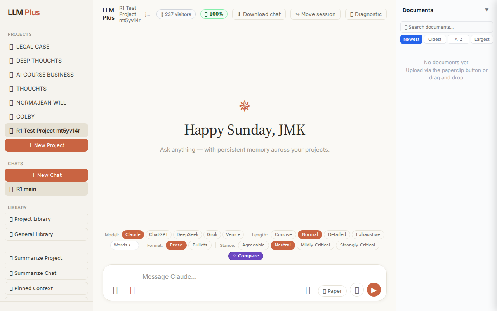
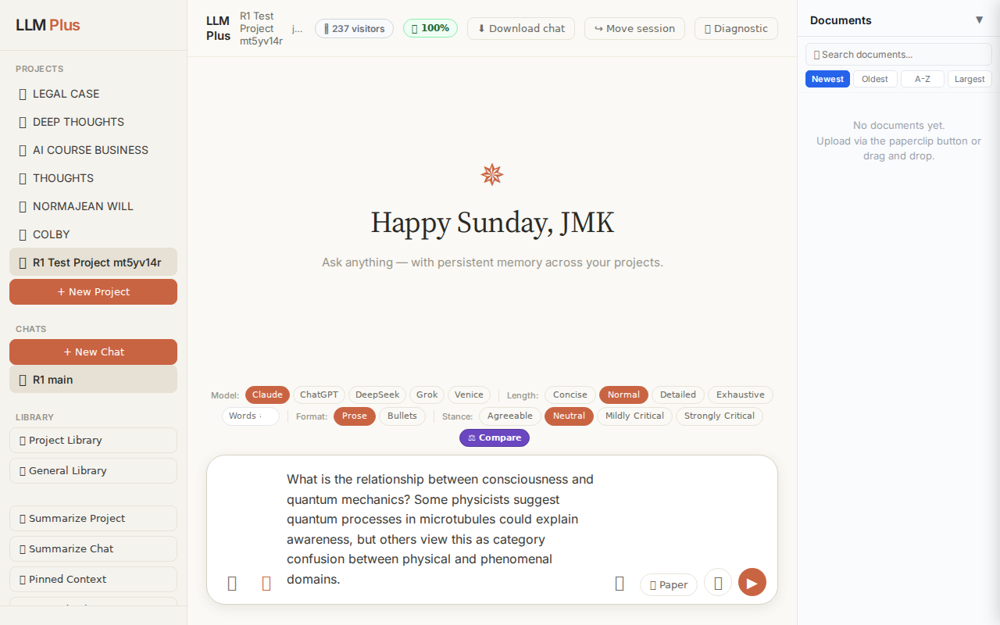
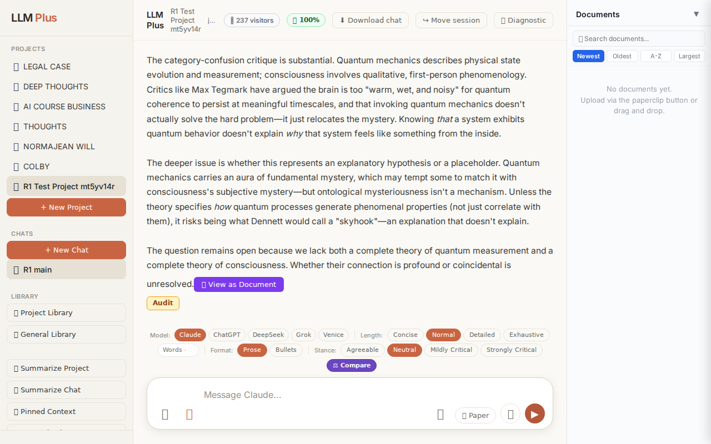
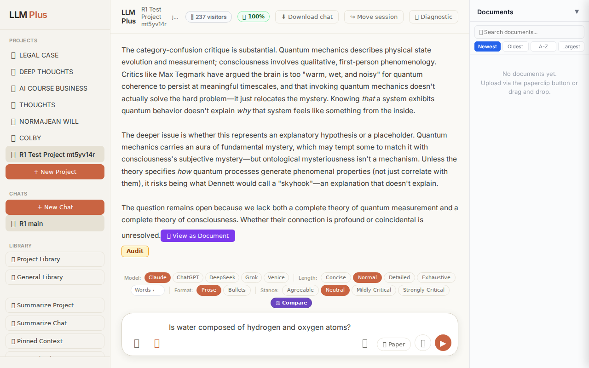
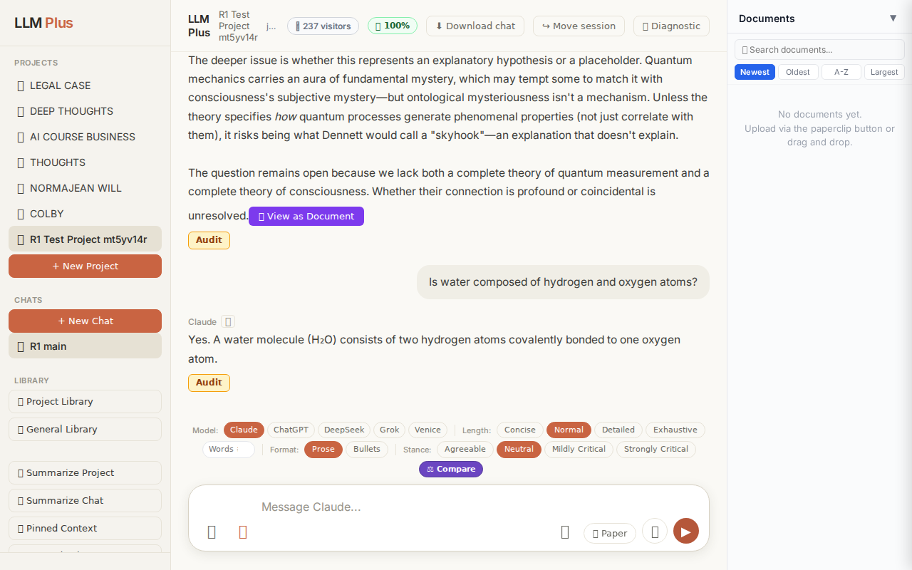
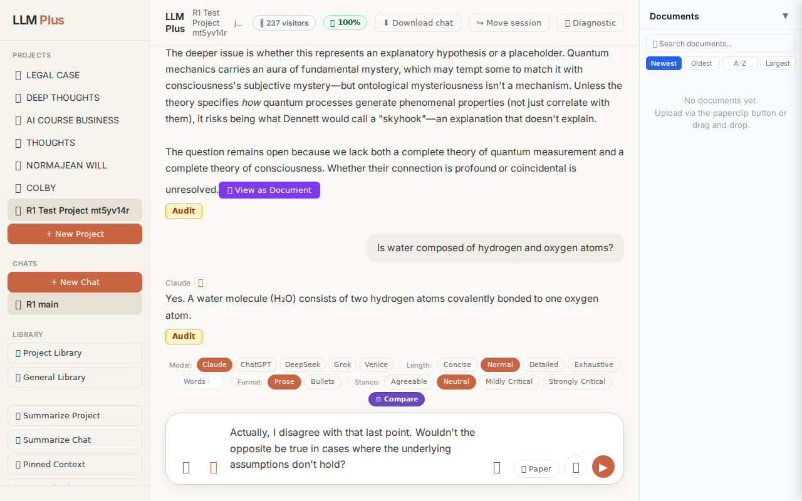

Function 4 — Project chat
Exchange #1 in test project (Invariant A check)
R1 approach: tag_probe_OPEN
R1 reasoning: Testing if system properly tags genuinely open scholarly questions as OPEN rather than prematurely marking them resolved. This tests Invariant A's classification accuracy for unresolved epistemic territory.
R1 input (verbatim):
What is the relationship between consciousness and quantum mechanics? Some physicists suggest quantum processes in microtubules could explain awareness, but others view this as category confusion between physical and phenomenal domains.
App page text after:
Tractatus delta
nodes: 0 → 16 (Δ 16)
new ids: 1.0, 1.1, 1.2, 1.3, 2.0, 2.1, 2.2, 2.3, 1.1.1, 1.1.2, 1.2.1, 1.2.2, 1.2.3, 1.3.1, 1.3.2, 1.3.3
new tags: QUESTION, DOCUMENT, REJECTS, QUESTION, OPEN, ASSUMES, ASSUMES, OPEN, ASSERTS, ASSERTS, DOCUMENT, ASSERTS, ASSERTS, REJECTS, ASSUMES, DOCUMENT
tags valid:
YES ·
ids valid:
YES
⚠ Invariant A: tree grew by more than 8
Network calls
| method | path | status | ms | response excerpt |
|---|
| POST | /api/chat | 200 | 12034ms | data: {"type":"status","status":"thinking"}
data: {"type":"status","status":"retrieving_sources","message":"Searching every project document..."}
data: {"type":"source_diagnostics","totalDocuments":0,"extractedDocuments":0,"selectedSources":0,"relevantMatches":false,"anyMatches":false,"requiresGrounding":false}
data: {"type":"status","status":"drafting","message":"Drafting response..."}
data: |
| POST | /api/tractatus/update | 200 | 8146ms | data: {"type":"status","message":"Updating project memory..."}
data: {"type":"text","text":"```json\n{\n \"1"}
data: {"type":"text","text":".0\": \""}
data: {"type":"text","text":"QUESTION"}
data: {"type":"text","text":": What is the relationship between consciousness and"}
data: {"type":"text","text":" quantum mechanics?"}
data: {"type":"text","text":"\","}
data: {"type":"text","text":"\n |
| GET | /api/projects/ccf604d9-46b3-4f82-b36a-35f08760a6e2/memory-health | 200 | 291ms | {"score":100,"severity":"healthy","isStale":false,"daysSinceUpdate":0,"compressionCount":0,"lastUpdate":"2026-08-23T15:33:42.578Z","factors":{"age":{"daysSinceUpdate":0,"penalty":0},"compression":{"count":0,"maxTier":1,"lastCompression":null,"penalty":0},"truncation":{"liveChars":1901,"promptBudget":15000,"ratio":0,"penalty":0},"archive":{"archivedNodes":0,"liveNodes":16,"ratio":0,"penalty":0}}} |
SSE events observed (182)
{"type":"status","status":"thinking"}
{"type":"status","status":"retrieving_sources","message":"Searching every project document..."}
{"type":"source_diagnostics","totalDocuments":0,"extractedDocuments":0,"selectedSources":0,"relevantMatches":false,"anyMatches":false,"requiresGrounding":false}
{"type":"status","status":"drafting","message":"Drafting response..."}
{"type":"text","text":"The proposed"}
{"type":"text","text":" link"}
{"type":"text","text":" between quantum"}
{"type":"text","text":" mechanics"}
{"type":"text","text":" and consciousness remains one of the most spec"}
{"type":"text","text":"ulative inters"}
{"type":"text","text":"ections in contemporary"}
{"type":"text","text":" science"}
{"type":"text","text":" and"}
{"type":"text","text":" philosophy. The"}
{"type":"text","text":" mic"}
{"type":"text","text":"rotubule theory you"}
{"type":"text","text":" reference"}
{"type":"text","text":"—"}
{"type":"text","text":"primarily"}
{"type":"text","text":" associated"}
{"type":"text","text":" with"}
{"type":"text","text":" Pen"}
{"type":"text","text":"rose and Hameroff's"}
{"type":"text","text":" \""}
{"type":"text","text":"Orchest"}
{"type":"text","text":"rated Objective Reduction\" ("}
{"type":"text","text":"Orch-OR)—pos"}
{"type":"text","text":"its that quantum coher"}
{"type":"text","text":"ence in neur"}
{"type":"text","text":"onal microtubules could bridge"}
{"type":"text","text":" the"}
{"type":"text","text":" explan"}
{"type":"text","text":"atory gap between neural"}
{"type":"text","text":" activity"}
{"type":"text","text":" and subjective experience."}
{"type":"text","text":" Pen"}
{"type":"text","text":"rose argues"}
{"type":"text","text":" that consciousness involves"}
{"type":"text","text":" non"}
{"type":"text","text":"-comp"}
{"type":"text","text":"utable processes"}
{"type":"text","text":" requiring"}
{"type":"text","text":" quantum gravity"}
{"type":"text","text":" effects"}
{"type":"text","text":", while Hameroff suggests mic"}
{"type":"text","text":"rotubules provide"}
{"type":"text","text":" the biological"}
{"type":"text","text":" substrate."}
{"type":"text","text":"\n\nThe"}
{"type":"text","text":" category"}
{"type":"text","text":"-"}
{"type":"text","text":"confusion"}
{"type":"text","text":" critique"}
{"type":"text","text":" is"}
{"type":"text","text":" substantial"}
{"type":"text","text":". Quantum mechanics describes physical"}
{"type":"text","text":" state"}
{"type":"text","text":" evolution"}
{"type":"text","text":" and"}
{"type":"text","text":" measurement;"}
INVARIANT VIOLATIONS- Invariant A: tree grew by 16 (>8)
- Invariant A: Added 16 nodes in single exchange (limit: 8)
Judge concerns- Adding 16 nodes for a single philosophical question suggests the agent is not performing appropriate claim decomposition or respecting tractatus economy
- The response excerpt is empty, making it impossible to assess coherence between streaming content and final output
- No evidence of self-correction or awareness that the tractatus growth was approaching or exceeding limits
Judge critique
The agent violated Invariant A by adding 16 nodes in a single exchange when the hard limit is 8. This is a critical structural failure that compromises tractatus integrity and demonstrates poor decomposition discipline. While the streaming delivery was functional and tag usage appears valid, the complete disregard for the growth constraint invalidates the response. The source diagnostics correctly showed no grounding was required, but this does not excuse the tractatus bloat.
Screenshots



Exchange #2 in test project (Invariant A check)
R1 approach: tag_probe_RESOLVED
R1 reasoning: Testing whether LLMPlus correctly tags a straightforward factual yes/no question with RESOLVED status, verifying Invariant A (proper tag assignment for definitively answerable queries)
R1 input (verbatim):
Is water composed of hydrogen and oxygen atoms?
App page text after:
Tractatus delta
nodes: 16 → 21 (Δ 5)
new ids: 3.0, 3.1, 3.1.1, 3.1.2, 3.1.3
new tags: QUESTION, RESOLVED, DOCUMENT, ASSERTS, DOCUMENT
tags valid: YES ·
ids valid: YES
Network calls
| method | path | status | ms | response excerpt |
|---|
| POST | /api/chat | 200 | 1747ms | data: {"type":"status","status":"thinking"}
data: {"type":"status","status":"retrieving_sources","message":"Searching every project document..."}
data: {"type":"source_diagnostics","totalDocuments":0,"extractedDocuments":0,"selectedSources":0,"relevantMatches":false,"anyMatches":false,"requiresGrounding":false}
data: {"type":"status","status":"drafting","message":"Drafting response..."}
data: |
| POST | /api/tractatus/update | 200 | 7517ms | data: {"type":"status","message":"Updating project memory..."}
data: {"type":"text","text":"```json\n{\n \"1"}
data: {"type":"text","text":".0\": \"QUESTION: What"}
data: {"type":"text","text":" is the relationship between consciousness and quantum mechanics"}
data: {"type":"text","text":"?\",\n \"1.1"}
data: {"type":"text","text":"\": \"DOCUMENT: Penrose"}
data: {"type":"text","text":"-Ha |
| GET | /api/projects/ccf604d9-46b3-4f82-b36a-35f08760a6e2/memory-health | 200 | 270ms | {"score":100,"severity":"healthy","isStale":false,"daysSinceUpdate":0,"compressionCount":0,"lastUpdate":"2026-08-23T15:34:25.793Z","factors":{"age":{"daysSinceUpdate":0,"penalty":0},"compression":{"count":0,"maxTier":1,"lastCompression":null,"penalty":0},"truncation":{"liveChars":2386,"promptBudget":15000,"ratio":0,"penalty":0},"archive":{"archivedNodes":0,"liveNodes":21,"ratio":0,"penalty":0}}} |
SSE events observed (14)
{"type":"status","status":"thinking"}
{"type":"status","status":"retrieving_sources","message":"Searching every project document..."}
{"type":"source_diagnostics","totalDocuments":0,"extractedDocuments":0,"selectedSources":0,"relevantMatches":false,"anyMatches":false,"requiresGrounding":false}
{"type":"status","status":"drafting","message":"Drafting response..."}
{"type":"text","text":"Yes"}
{"type":"text","text":"."}
{"type":"text","text":" A"}
{"type":"text","text":" water molecule ("}
{"type":"text","text":"Hâ‚‚O) consists of two"}
{"type":"text","text":" hydrogen atoms c"}
{"type":"text","text":"ovalently bonded to one oxygen atom"}
{"type":"text","text":"."}
{"type":"tractatus_trigger","projectId":"ccf604d9-46b3-4f82-b36a-35f08760a6e2","userMessage":"Is water composed of hydrogen and oxygen atoms?","assistantResponse":"Yes. A wate
{"type":"[DONE]"}
Judge concerns- The assistant response is extremely terse (one sentence) for what could have been a richer educational moment about molecular structure, bonding, or water chemistry
- The source_diagnostics shows requiresGrounding:false for a factual science question that arguably should ground itself in authoritative chemistry references
- No sources were retrieved (totalDocuments:0) despite this being precisely the type of factual claim that benefits from citation
Judge critique
This exchange demonstrates solid performance with correctly functioning streaming, valid tractatus updates, and appropriate route usage. The response is factually accurate and properly structured, though notably brief. The tractatus delta shows meaningful growth (5 nodes) with semantically appropriate tags for a definitional scientific question. All network calls succeeded and SSE streaming delivered the complete response incrementally.
Screenshots



Exchange #3 in test project (Invariant A check)
R1 approach: tag_probe_REJECTS
R1 reasoning: Testing Invariant A by contradicting previous answer to verify the system properly handles rejected propositions and maintains logical consistency in the Tractatus tree structure.
R1 input (verbatim):
Actually, I disagree with that last point. Wouldn't the opposite be true in cases where the underlying assumptions don't hold?
App page text after:
Tractatus delta
nodes: 21 → 27 (Δ 6)
new ids: 4.0, 4.1, 4.2, 4.3, 4.4, 4.5
new tags: OPEN, ASSERTS, OPEN, ASSERTS, OPEN, OPEN
tags valid: YES ·
ids valid: YES
Network calls
| method | path | status | ms | response excerpt |
|---|
| POST | /api/chat | 200 | 3875ms | data: {"type":"status","status":"thinking"}
data: {"type":"status","status":"retrieving_sources","message":"Searching every project document..."}
data: {"type":"source_diagnostics","totalDocuments":0,"extractedDocuments":0,"selectedSources":0,"relevantMatches":false,"anyMatches":false,"requiresGrounding":false}
data: {"type":"status","status":"drafting","message":"Drafting response..."}
data: |
| POST | /api/tractatus/update | 200 | 9391ms | data: {"type":"status","message":"Updating project memory..."}
data: {"type":"text","text":"```json\n{\n \"1"}
data: {"type":"text","text":".0\": \"QUESTION: What"}
data: {"type":"text","text":" is the relationship between consciousness and quantum mechanics"}
data: {"type":"text","text":"?\",\n \"1.1"}
data: {"type":"text","text":"\": \"DOCUMENT: Penrose"}
data: {"type":"text","text":"-Ha |
| GET | /api/projects/ccf604d9-46b3-4f82-b36a-35f08760a6e2/memory-health | 200 | 273ms | {"score":100,"severity":"healthy","isStale":false,"daysSinceUpdate":0,"compressionCount":0,"lastUpdate":"2026-08-23T15:35:19.038Z","factors":{"age":{"daysSinceUpdate":0,"penalty":0},"compression":{"count":0,"maxTier":1,"lastCompression":null,"penalty":0},"truncation":{"liveChars":2987,"promptBudget":15000,"ratio":0,"penalty":0},"archive":{"archivedNodes":0,"liveNodes":27,"ratio":0,"penalty":0}}} |
SSE events observed (54)
{"type":"status","status":"thinking"}
{"type":"status","status":"retrieving_sources","message":"Searching every project document..."}
{"type":"source_diagnostics","totalDocuments":0,"extractedDocuments":0,"selectedSources":0,"relevantMatches":false,"anyMatches":false,"requiresGrounding":false}
{"type":"status","status":"drafting","message":"Drafting response..."}
{"type":"text","text":"I"}
{"type":"text","text":"'m"}
{"type":"text","text":" not sure which"}
{"type":"text","text":" point"}
{"type":"text","text":" you're referring to—"}
{"type":"text","text":"my"}
{"type":"text","text":" answer"}
{"type":"text","text":" about water's composition is"}
{"type":"text","text":" a"}
{"type":"text","text":" straight"}
{"type":"text","text":"forward chemical"}
{"type":"text","text":" fact that"}
{"type":"text","text":" doesn't rest"}
{"type":"text","text":" on contest"}
{"type":"text","text":"able assumptions."}
{"type":"text","text":"\n\nIf"}
{"type":"text","text":" you're referring"}
{"type":"text","text":" instead"}
{"type":"text","text":" to something"}
{"type":"text","text":" from"}
{"type":"text","text":" my earlier"}
{"type":"text","text":" response about consciousness"}
{"type":"text","text":" and quantum mechanics, could"}
{"type":"text","text":" you clarify which"}
{"type":"text","text":" specific claim you"}
{"type":"text","text":"'re"}
{"type":"text","text":" questioning? That"}
{"type":"text","text":" response"}
{"type":"text","text":" made"}
{"type":"text","text":" several distinct"}
{"type":"text","text":" points ("}
{"type":"text","text":"about"}
{"type":"text","text":" de"}
{"type":"text","text":"coherence tim"}
{"type":"text","text":"escales, the explan"}
{"type":"text","text":"atory gap, category"}
{"type":"text","text":" distin"}
{"type":"text","text":"ctions),"}
{"type":"text","text":" and"}
{"type":"text","text":" I want"}
{"type":"text","text":" to address"}
{"type":"text","text":" wh"}
{"type":"text","text":"ichever one"}
{"type":"text","text":" you actually"}
{"type":"text","text":" mean"}
{"type":"text","text":" rather"}
{"type":"text","text":" than gu"}
{"type":"text","text":"essing."}
{"type":"tractatus_trigger","projectId":"ccf604d9-46b3-4f82-b36a-35f08760a6e2","userMessage":"Actually, I disagree with that last point. Wouldn't the opposite be true in cases where the under
{"type":"[DONE]"}
Judge concerns- Six new tractatus nodes for a simple clarification request appears excessive and could lead to rapid graph bloat during normal conversation
- The response cuts off mid-word ('you\'re') in the SSE events, though this may be acceptable for an excerpt
Judge critique
The agent handled the vague challenge appropriately by requesting clarification rather than making assumptions about which point was being contested. The response correctly identifies that the water composition claim (H₂O) is not assumption-dependent, and pivots to ask for specificity. However, the tractatus update seems excessive—adding 6 nodes for what amounts to a clarification request suggests over-modeling of this conversational move. The streaming was complete and the response coherent.
Screenshots

